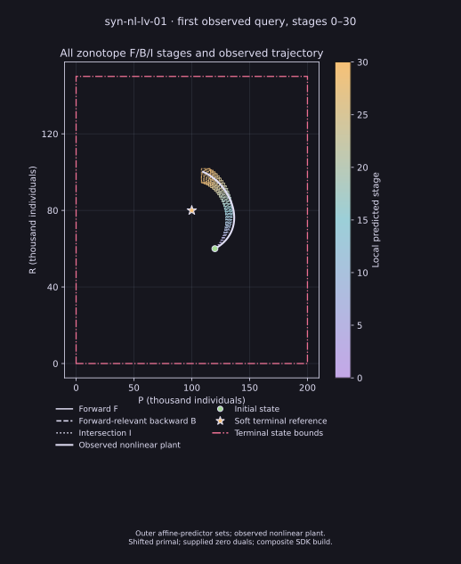
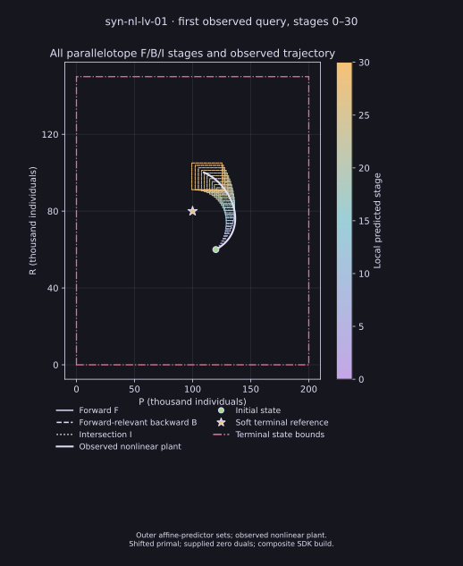
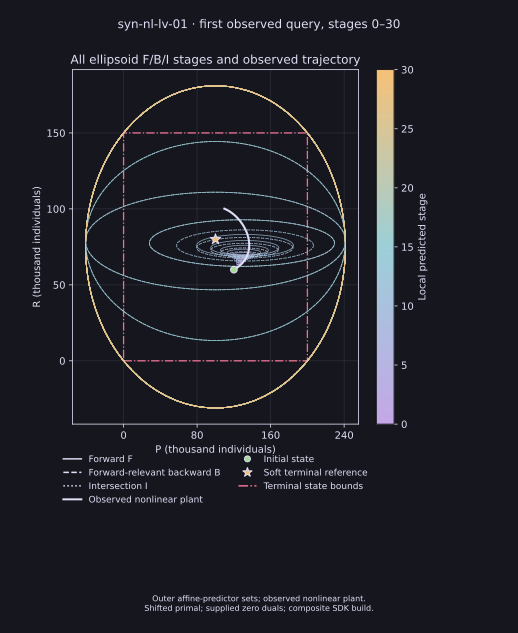
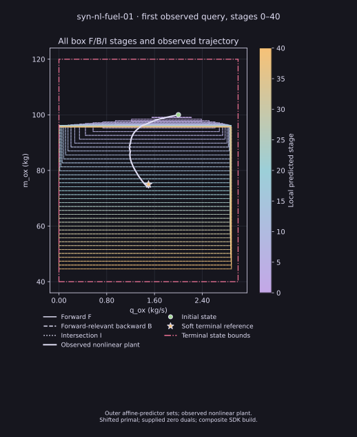
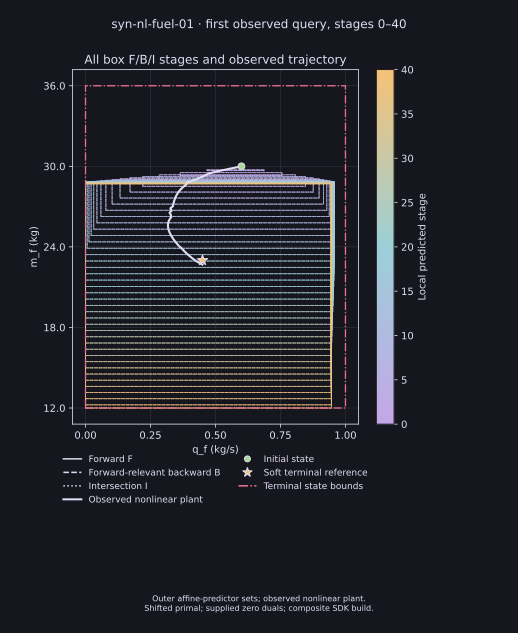

Continuous affine-history control: functional evidence
Observed-state numerical episodes · direct and selected F/B/I profiles
Fresh installed-SDK warm-gap wave
Open all 16 attempt records, compact outcomes and all-stage figures. Eight profiles completed their original full episodes; seven selected profiles retain resource, solver or geometry stops. One additional early LV polytope lifecycle has no terminal result and remains separately inconclusive.
Source 9540b8d0, genuine installed SDK source ab3fdba6. The eight completed episodes and two orbit prefixes contain 304 independently checked accepted queries. Original costs, action bounds and remaining horizons are preserved. Worker resource envelopes differ and are disclosed; these functional outcomes do not establish a timing ranking or finish the exhaustive campaign.
What ran
Each query optimizes the full remaining recovered affine-history relation with the original continuous action bounds and source cost. The first control is applied to the nonlinear plant. Original task horizons and source identities are preserved. These are individual functional results, not five-representation coverage. IPOPT gives local numerical solutions; no global optimality, continuous-time safety, or performance ranking is claimed.
Completed warm-start family episodes
These source-qualified captures retain the complete original horizon and source cost. Every accepted query was independently checked for the shifted prior history and zero supplied duals. C++ provides geometry and history compilation; these captures use a Python/CasADi controller adapter and do not establish a Python-free native controller.
| Task and family | Holds | Applied J | Evidence |
|---|---|---|---|
| Lotka-Volterra · zonotope | 30/30 | 0.092063575 | Receipt · Raw ZIP |
| Lotka-Volterra · parallelotope | 30/30 | 0.0920672373 | Receipt · Raw ZIP |
| Lotka-Volterra · ellipsoid | 30/30 | 0.0920635651 | Receipt · Raw ZIP |
| Fuel · box | 40/40 | 0.00384886669 | Receipt · Raw ZIP |
Values are rounded here; receipts retain full precision. Source a4889d47, explicitly qualified composite build. These individual functional outcomes do not rank performance or complete the module campaign.
All-stage sets and executed trajectories
Every predicted time slice belongs to the first observed-state query. The trajectory follows the actual nonlinear plant over the complete episode. Intersections were constructed in full state space before projection. The star marks a soft objective reference; the source does not impose arrival at that point.





Native parallelotope finite-plan MPC · source d6fc399a
Three new source-qualified saved episodes and mathematical visual example: Lotka–Volterra 30/30 holds, orbit 20/20, fuel 40/40. All 90 native queries accepted; 79 incomplete and 11 complete searches over the remaining finite action product. Every query’s complete saved stage bounds, affine plans, nonlinear paths, both independent replay outcomes, source-equivalent component overlay and raw ZIPs are retained. This finite-action planner is separate from the earlier continuous-action F/B/I records below; these outcomes establish no benchmark ranking, validated enclosure or global nonlinear optimality.
Initialization qualification
The f4 and 3c episodes below used fresh initial guesses at each query. They preserve observed physical histories and independently checked source costs, but do not satisfy the task protocol requiring a shifted prior primal with zero supplied duals. Treat them as historical cold-start observations, not warm-start-compliant campaign results. The current implementation shifts accepted histories; these earlier captures do not verify that implementation or a current installed package.
Completed physical episodes — historical cold starts
| Task | Optimizer | Holds | Source objective | Evidence |
|---|---|---|---|---|
| Lotka–Volterra | HiGHS QP | 30/30 | 0.09206356098706904 | Receipt · Raw ZIP · Trajectory · Phase |
| Earth orbit | CasADi/IPOPT | 20/20 | 65.22966483569324 | Receipt · Raw ZIP · Trajectory · Phase |
| Fuel | CasADi/IPOPT | 40/40 | 0.003834213429545932 | Receipt · Raw ZIP · Trajectory · Phase |
| Lotka–Volterra with F/B/I box geometry | CasADi/IPOPT | 30/30 | 0.09207050915639435 | Receipt · Raw ZIP · Trajectory · Phase · All-stage F/B/I and observed trajectory |
| Fuel with F/B/I box geometry | CasADi/IPOPT | 40/40 | 0.0038341007246844383 | Receipt · Raw ZIP · Oxidizer plane · Fuel plane |
| Lotka–Volterra with F/B/I zonotope geometry | CasADi/IPOPT | 30/30 | 0.09206357506388757 | Receipt · Raw ZIP · Trajectory |
| Lotka–Volterra with F/B/I parallelotope geometry | CasADi/IPOPT | 30/30 | 0.09207050915639435 | Receipt · Raw ZIP · Trajectory |
| Lotka–Volterra with F/B/I ellipsoid geometry | CasADi/IPOPT | 30/30 | 0.09206356266610233 | Receipt · Raw ZIP · Trajectory |
| Lotka–Volterra with F/B/I box geometry, shifted history warm start | CasADi/IPOPT | 30/30 | 0.09206723732293642 | Receipt · Raw ZIP · Trajectory |


F/B/I box episode
The Lotka box route adds selected full-state forward, forward-relevant backward and intersection memberships before the original-cost IPOPT solve. The independent audit checked 1,485 memberships and replayed 5,940 support certificates across the 30 observed-state queries. The raw preparation receipt incorrectly calls this controller direct affine-history MPC; its geometry field, resolved graph and saved queries show the box F/B/I route. The original receipt remains unchanged. The mixed SDK/current-source build is identified in each record. These feedback episodes used a cold start at every observed query; the source warm-start contract was not implemented. The fuel worker finished all control holds before the policy and solver source files were edited while the parent performed replay and rendering; its source capsule and independent checks are retained.
All-stage feedback geometry and observed trajectories
Each image shows the selected outer F, forward-relevant B, and I boxes at every predicted stage of the first observed query. The line follows the full nonlinear plant episode. The dotted and dashed styles distinguish sets; the soft reference is not a terminal constraint. Full-state intersections were formed before projection. Screen and print variants use the same saved records.


Incomplete orbit box attempts
The first orbit box attempt applied 3 of 20 holds, then independent source-cost validation rejected an IPOPT epigraph discrepancy. A separate same-provider refinement capture applied 4 of 20 holds, then IPOPT reported a local infeasibility status. Neither outcome establishes source infeasibility or a complete trajectory. Both used cold starts. Their accepted prefixes were independently checked against source constraints, costs and support certificates.
First partial receipt · First raw ZIP · Refinement partial receipt · Refinement raw ZIP
Incomplete HiGHS fuel attempt
The worker reached its declared 1,800-second limit after 2/40 holds. The third full-history query had 38 intervals remaining; no solver response was returned. This timeout does not establish infeasibility or incompatibility.
Provenance and plots
The earlier direct-profile raw images and coverage text incorrectly labeled those controllers as NMPC. Raw ZIPs preserve those files unchanged; the separately linked plots use corrected labels and were rendered from saved records without a controller rerun. Each completed record includes a render receipt. Original attempt preparation recorded binary source as unknown; separate build receipts document source revision, binary hash, and source capsule. Each directory contains checksums and an independent audit source.
Shifted-history warm-start captures
New source a4889d47 uses an observed-state zero-control affine rollout for its first query. Every later query drops the applied prior state/control stage, replaces its first state with the new observation, and supplies zero duals. Saved provider initialization readbacks and independent audits check those values. All five families passed a two-query analytic check with an altered second observation; this is a small functional check, not five-family coverage on the original tasks.
The new Lotka box episode completed 30/30 holds, both physical replays and independent checks of all 30 warm queries, 1,485 memberships and 5,940 support certificates. Source objective: 0.09206723732293642. Its all-31-stage overlay shows the first observed query's full-state F/B/I sets and the nonlinear executed trajectory; print SVG.


The new orbit box episode applied 12/20 holds, then IPOPT reported Infeasible_Problem_Detected at update 12. Its accepted prefix and failing query's shifted initialization were independently checked. There is no full objective, complete replay, source infeasibility or completed-trajectory claim. Partial receipt · Raw ZIP.
All-five-family warm-query receipt · Raw checks. The initial tiny checker omitted the original-horizon running-cost normalization; its failed record remains local, and the corrected checker and summary-label correction are retained in the warm-query archive.
The first full-task attempts stopped before any physical hold because the copied physical bridge lacked executable permission. Their original controller queries and terminal supervisor failures are preserved: Lotka setup failure · orbit setup failure. Only the executable mode was corrected; binary bytes and task definitions were unchanged. The separately captured successful/partial attempts above retain distinct identities. Earlier cold records remain unchanged.